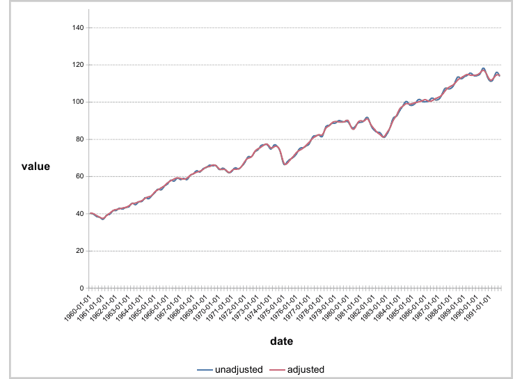

Define settings for a y axis.
chart_ax_y(
x,
orientation,
crosses,
cross_between,
major_tick_mark,
minor_tick_mark,
tick_label_pos,
display,
num_fmt,
rotation,
limit_min,
limit_max,
position,
second_axis = FALSE
)an ms_chart object.
axis orientation, one of 'maxMin', 'minMax'.
specifies how the axis crosses the perpendicular axis, one of 'autoZero', 'max', 'min'.
specifies how the value axis crosses the category axis between categories, one of 'between', 'midCat'.
tick marks position, one of 'cross', 'in', 'none', 'out'.
ticks labels position, one of 'high', 'low', 'nextTo', 'none'.
should the axis be displayed (a logical of length 1).
number formatting. See section for more details.
rotation angle. Value should be between -360
and 360.
minimum value on the axis.
maximum value on the axis.
position value that cross the other axis.
unused

All % need to be doubled, 0%% mean "a number
and percent symbol".
From my actual knowledge, depending on some chart type
and options, the following values are not systematically
used by office chart engine; i.e. when chart pre-compute
percentages, it seems using 0%% will have no
effect.
General: default value
0: display the number with no decimal
0.00: display the number with two decimals
0%%: display as percentages
0.00%%: display as percentages with two digits
#,##0
#,##0.00
0.00E+00
# ?/?
# ??/??
mm-dd-yy
d-mmm-yy
d-mmm
mmm-yy
h:mm AM/PM
h:mm:ss AM/PM
h:mm
h:mm:ss
m/d/yy h:mm
#,##0 ;(#,##0)
#,##0 ;[Red](#,##0)
#,##0.00;(#,##0.00)
#,##0.00;[Red](#,##0.00)
mm:ss
[h]:mm:ss
mmss.0
##0.0E+0
@
library(mschart)
library(officer)
chart_01 <- ms_linechart(
data = us_indus_prod,
x = "date", y = "value",
group = "type")
chart_01 <- chart_ax_y(x = chart_01, limit_min = 0, limit_max = 150)
chart_01 <- chart_ax_x(
x = chart_01, num_fmt = "[$-fr-FR]mmm yyyy",
limit_min = min(us_indus_prod$date),
limit_max = as.Date("1992-01-01"))
chart_01 <- chart_theme(chart_01,
grid_major_line_x = fp_border(width = 0),
grid_minor_line_x = fp_border(width = 0)
)